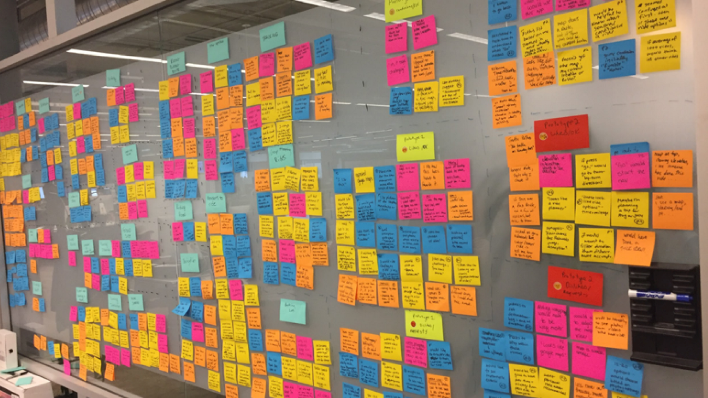
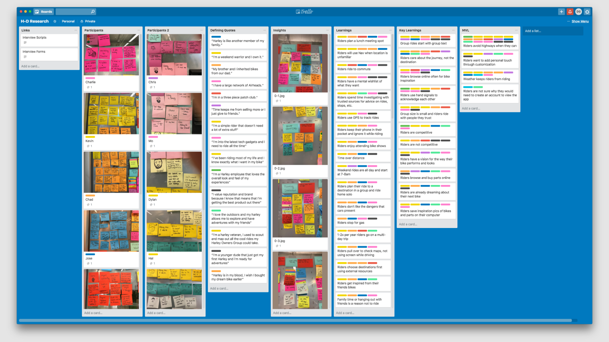
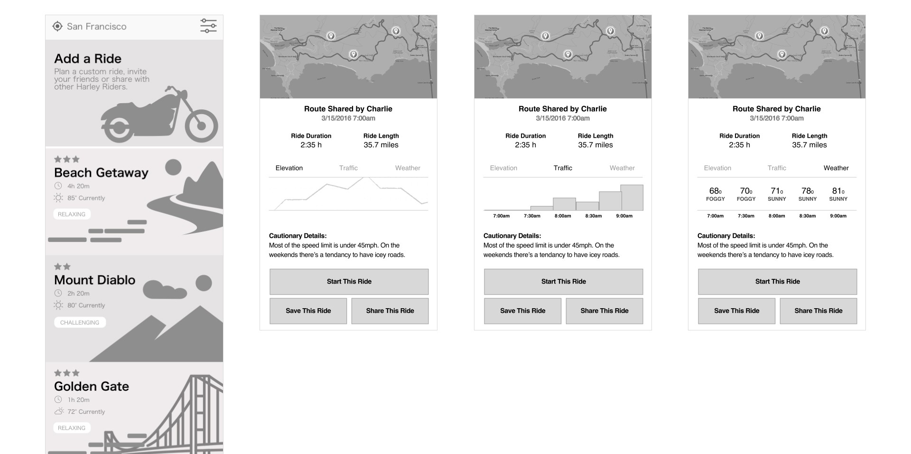
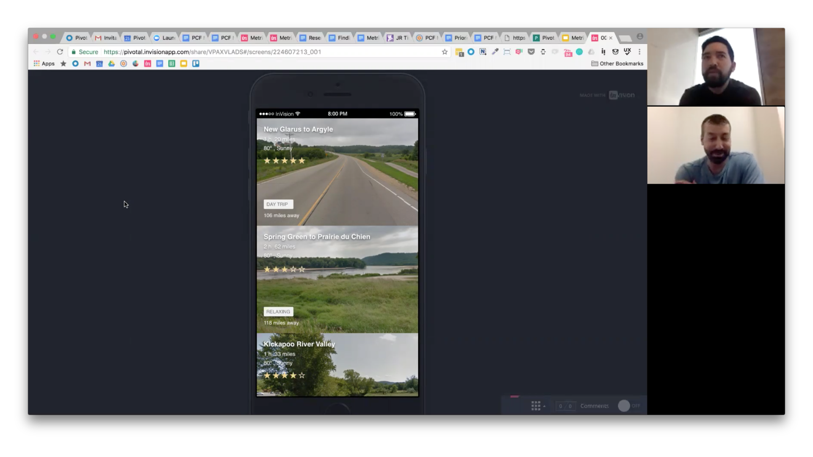
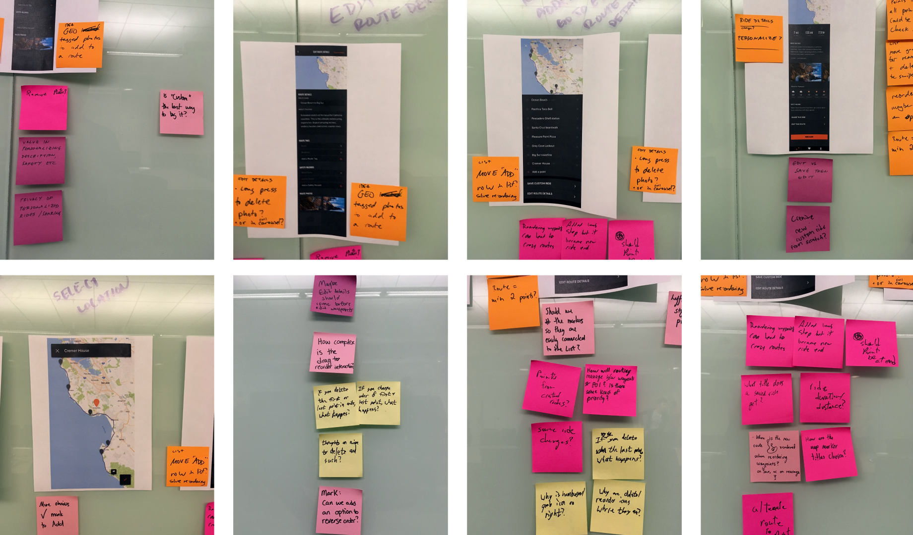
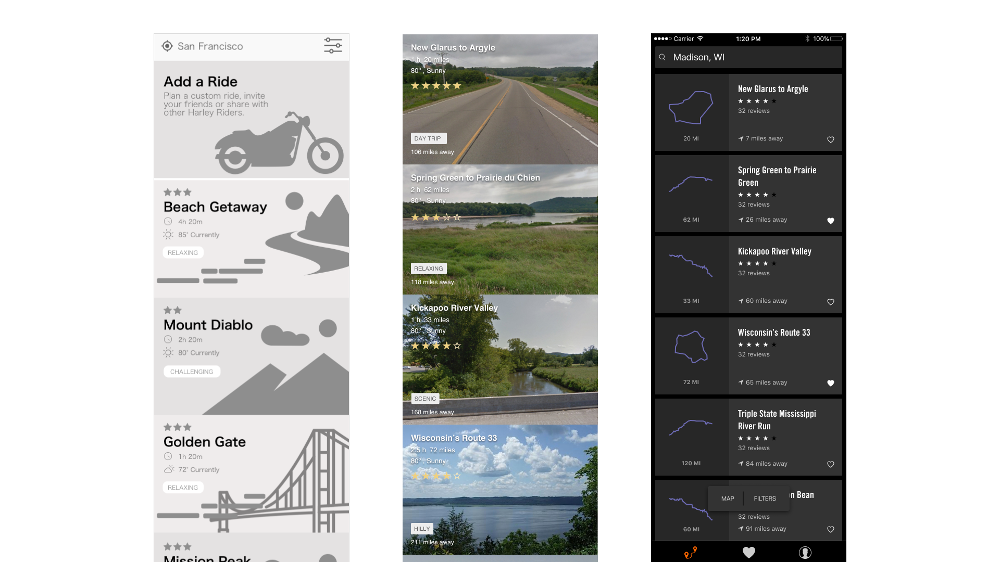
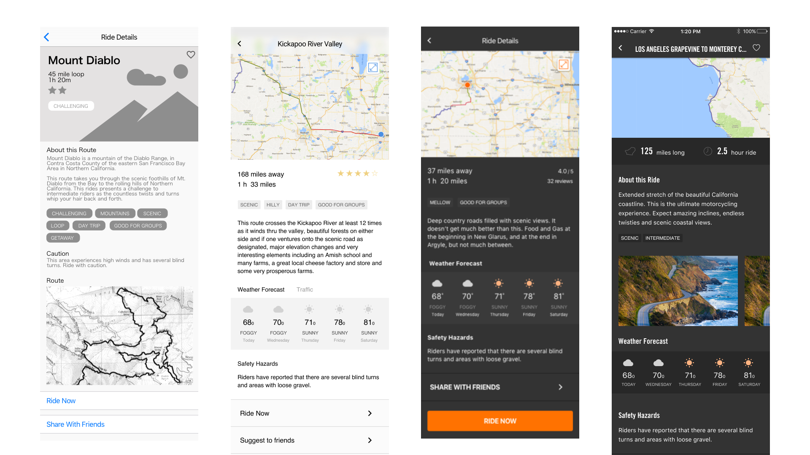
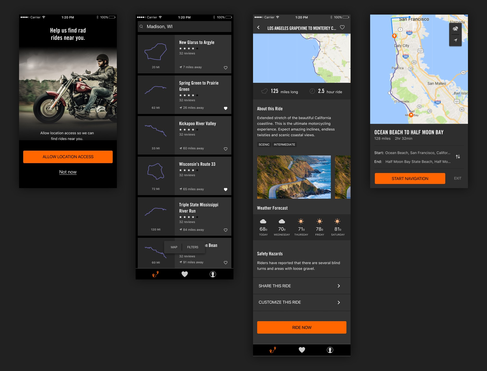

Problem: Harley-Davidson riders were not going on as many rides as they had in the past.
Goal: Increase ridership to 3–4 more rides per year.
Team: 1 Harley product owner, 1 Harley product manager, 3 Harley product stakeholders, 1 Pivotal product manager, myself and another Pivotal designer and a Harley designer, 2 Harley iOS developers, and 2 Pivotal iOS developers.
We conducted 3–5 interviews a day for three weeks. We stayed really broad and focused on learning more about core rider behaviors.
I like using Trello to organize our insights into key learnings as we move forward. If you’re interested in this method I’ve written more about it on Medium.
1) People ride for errands, to commute, or to get around.
2) Family time and other commitments keep riders from riding more, and bad weather keeps riders from riding
3) Finding a fun ride to go on is usually word of mouth — huge opportunity with this one.
We sketched ride planning ideas as a balanced team of engineers, designers, and product managers. After a few round, we gained consensus by dot voting.
We learned from our generative research that riders will usually text with other fellow riders while they’re deciding when/where to go riding. Will riders be willing to use an app to help them make this decision? How enticing would planned routes be? Would riders trust rides from a brand like HD? If yes, what aspects about the decision making process are important to riders?
 We learned:
1) Riders are always looking for new routes to try.
2) A well known motorcycle brand carries a lot of trust of the quality and safety of a route.
3) Riders care about rides near them, the duration of the ride, and the quality of the ride.
We would test often and iterate every couple days to keep our momentum. I like running design critiques with the entire team, and use post-its to focus and consolidate similar feedback topics. It does 2 things really well: it helps to avoid group think, and designers have a record of the discussion to reference in the next iteration.
 We learned important details like the value of the shape of a ride vs. a photo of a single point. The overivew outline was far more helpful. We also learned specific data points that riders needed to make a decision, and used their importance to lay out the heirarchy of the ride page.
It allowed them to quickly learn what type of ride it was, the distance from them, and make the decision on whether or not it was the ride they wanted. Harley Davidson took the work we did with them at Pivotal, and continued building towards their first release in the app store in early 2019.
We quicky built and tested an MVP, all the while navigating some really tough stakeholders.
We circled some features over and over, even though our testing quickly invalidated them. Harley brought the project back in house and worked on and later released some of the features we clearly invalidated during our research.